Quatre réseaux moins connus retenus pour l'oral (hors Instagram, TikTok, Facebook et X, comme demandé) : Weibo, KakaoTalk, Threads, Pinterest. Les 13 réseaux sont détaillés dans le dossier PDF.
La marque Lacoste
Fashion-sportPremiumLifestyle
Archives
1933René Lacoste & André Gillier
Produit iconique
L.12.12Le polo en petit piqué
Réseau
98 pays1 100 boutiques, 8 200 employés
Groupe
Maus FrèresContrôle cédé en 2012 par Michel Lacoste
Innovation
46 titres du Grand Chelemremportés avec la raquette en acier Lacoste, 1966-1978
Monde
504 boutiquesen Asie-Pacifique, 379 en EMEA, 198 aux Amériques
Parfum
1968première eau de toilette, lancée avec Jean Patou
Éric VallatCEO depuis 2025 ; Pelagia Kolotouros à la création
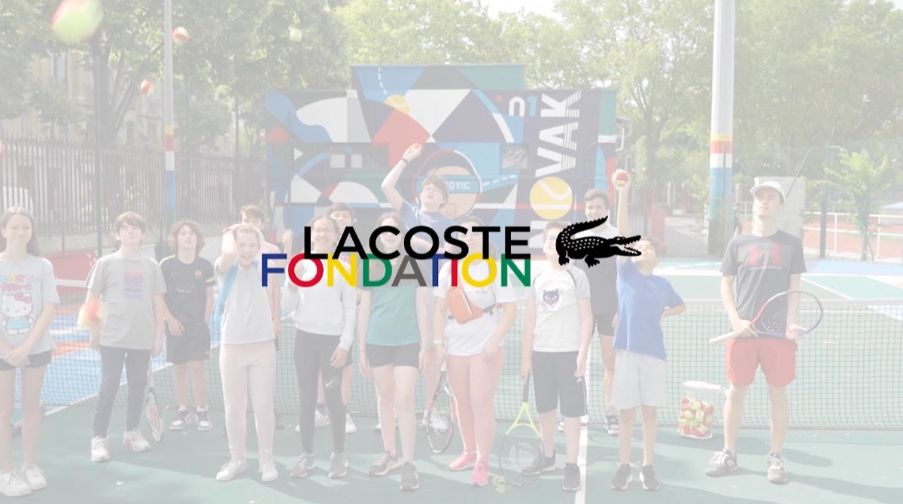
Engagement
Fondation Lacostecréée en 2006, pour l'inclusion sociale et professionnelle
Un vêtement pensé pour le tennis devenu un produit de mode : le crocodile, symbole de la marque depuis sa création.
Sources : Lacoste, site officiel ; Autorité de la concurrence, rachat par Maus Frères ; Wikipédia, Lacoste (entreprise), (consultés le 11/09/2026).
3 / 14
1923 : René Lacoste surnommé « le Crocodile ». 1933 : naissance du fashion-sport. 1971 : sponsor de Roland-Garros. 2012 : Michel Lacoste, président, et une partie de la famille cèdent le contrôle à Maus Frères (valorisation 1 à 1,25 Md€). CEO : Éric Vallat depuis 2025. 2026 : nouvelle identité visuelle.
L'histoire de Lacoste
1923René Lacoste devient « le Crocodile »
1933Le polo L.12.12, créé avec André Gillier
1971Partenaire officiel de Roland-Garros
2012Maus Frères prend le contrôle du groupe
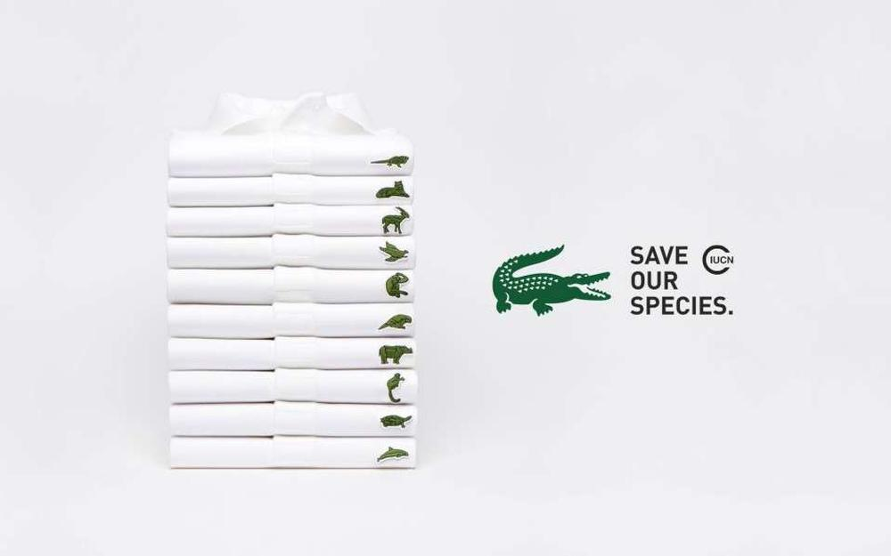
2018« Save Our Species » : le crocodile cède sa place
2026Nouvelle identité, « Life is a Beautiful Sport »
Sources : Lacoste, site officiel, histoire de la marque, (consulté le 11/09/2026) ; photo AFP de Michel Lacoste. Dates recoupées avec Claude.
4 / 14
Lire la frise dans le sens du serpent. 1923 : un pari sur une valise en crocodile vaut son surnom à René Lacoste. 1933 : avec André Gillier, il lance le polo en petit piqué, naissance du fashion-sport. 1971 : partenaire de Roland-Garros, le pilier tennis de la marque. 2012 : fin de près de 80 ans de contrôle familial, Maus Frères devient majoritaire. 2018 : opération « Save Our Species », dix espèces menacées remplacent le crocodile sur des polos en édition limitée. 2026 : nouvelle identité visuelle et retour de la signature « Life is a Beautiful Sport ». Autres dates : 1968 première eau de toilette, 2025 Éric Vallat devient CEO.
Notre raison d'être
Faire de l'élégance une valeur qui transcende les différences
"Elevating elegance to a value that transcends differences." Mission : "Liberate movement and connect all cultures". Vision : devenir la marque fashion-sport la plus inspirante.
Play as one teamPlay with elegancePlay by daringPlay with tenacity
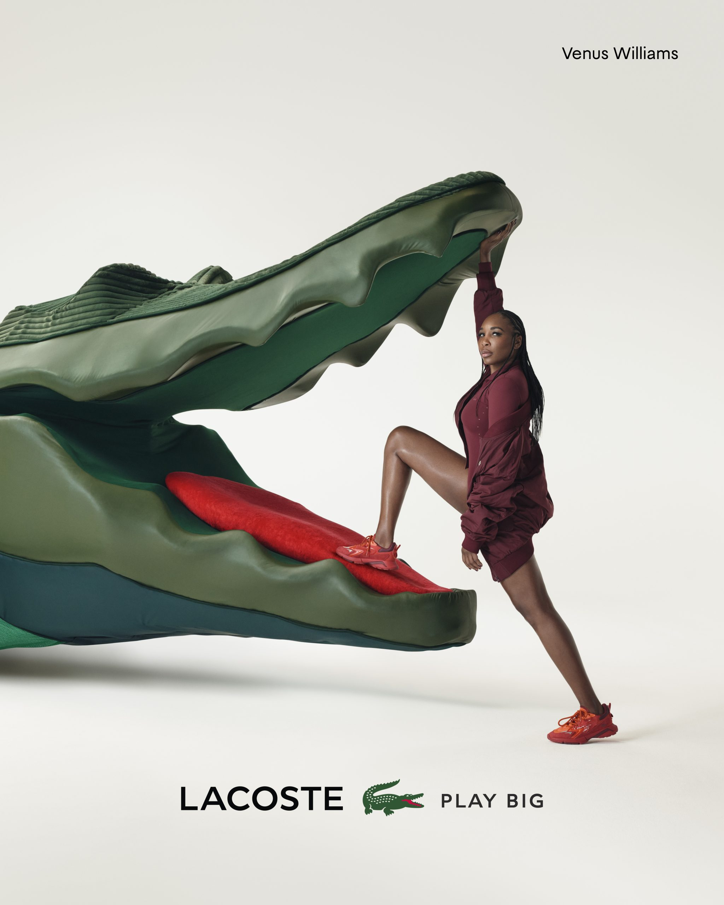
Campagne « Play Big », Venus Williams
Source : Lacoste, raison d'être, mission et valeurs officielles, (consulté le 11/09/2026).
5 / 14
L'élégance vue comme une attitude, au-delà du statut, du genre, de la culture ou de l'origine. RSE "Durable Elegance" en 3 volets : People, Communities, Planet. Les 4 valeurs : respect et coopération, excellence et fair-play, audace, persévérance.
Qui sommes-nous : deux métiers du digital
Romane Da-Silva
Directrice Artistique
Identité visuelle, moodboards et campagnes : l'image de Lacoste sur chaque réseau.
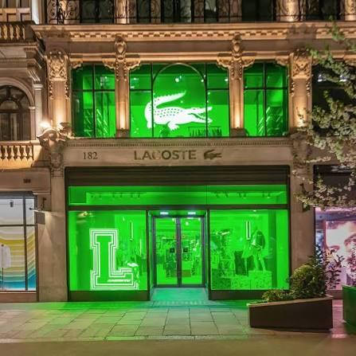
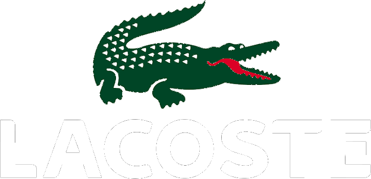
Un binôme au service de la marqueL'image d'un côté, la relation client de l'autre.
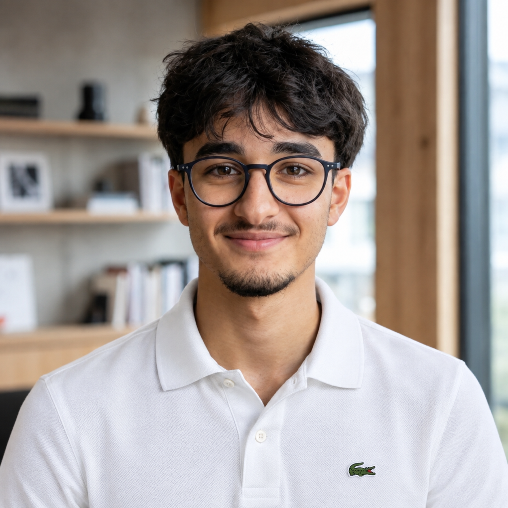
Sofian Chtioui
Chargé e-CRM
Emailings segmentés, newsletters et parcours clients, d'après une vraie offre Cdiscount (LinkedIn, 10/09/2026).
Sources : Cdiscount, offre « Stage - Chargé de CRM vendeurs », LinkedIn, (consultée le 11/09/2026) ; Lacoste, offre « Assistant Directeur Artistique », (consultée le 11/09/2026).
6 / 14
Romane : identité visuelle, univers esthétique, moodboards, campagnes, cohérence graphique d'un réseau à l'autre, veille. Sofian, chargé e-CRM (offre Cdiscount, linkedin.com/jobs/view/4453467232) : anime la base clients par emailings segmentés, notifications in-app et newsletters ; construit les parcours d'onboarding et de fidélisation ; lit les données pour repérer les frictions et limiter le churn.
Ce que rapporte un ambassadeur
Taux d'engagement Instagram de chaque ambassadeur, comparé à celui du compte Lacoste.
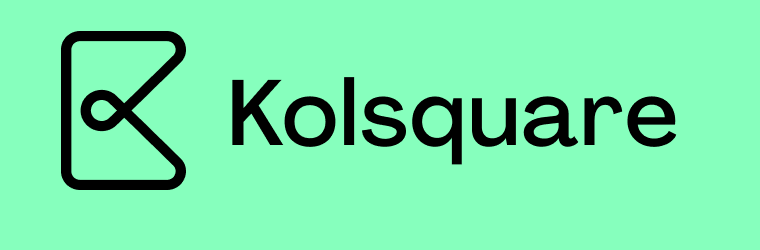
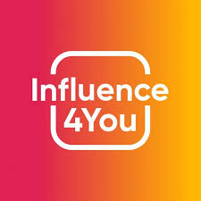
YouTubePierre Niney & Pierre Gasly for Lacoste & Alpine
82 113 $EMV du post
81 000likes
430commentaires
16 380partages
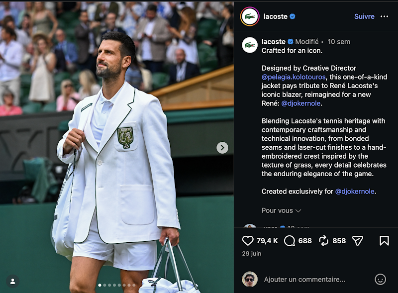
Pierre Niney2,6 M followers
6,55 %
Adèle Exarchopoulos2,3 M followers
5,86 %
Novak Djokovic16,7 M followers
2,13 %
Venus Williams2,2 M followers
0,98 %
Compte @lacoste8,9 M followers
0,19 %
Rapport EMV reçu par mail, Influence4You
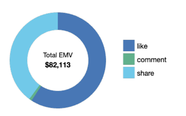
Sources : Kolsquare et Influence4You, engagement et calculateur EMV, (consulté le 11/09/2026) ; YouTube, chaîne Lacoste, (consulté le 12/09/2026).
7 / 14
Les ambassadeurs français ont un taux d'engagement 30 fois supérieur à celui du compte Lacoste. EMV : le post vidéo "Pierre Niney & Pierre Gasly for Lacoste & Alpine" (81 000 likes, 430 commentaires, 16 380 partages) vaut 82 113 $ de visibilité gagnée, calcul fait sur Influence4You. La même vidéo sur YouTube : 4,3 k vues, publiée le 29/06/2026. Loupe : le post Djokovic du 29 juin cumule 79,4 K likes, 688 commentaires et 858 republications. Double tranchant : levier puissant, mais cet engagement appartient d'abord à la célébrité.
Weibo, l'écosystème Wang Yibo
#CROCFIT · #Lacoste生动在场
536 Kabonnés au compte officiel LACOSTE
31 160interactions sur un post Wang Yibo, mai 2026
9 9474 516
93 Mvues vidéo cumulées sur le compte
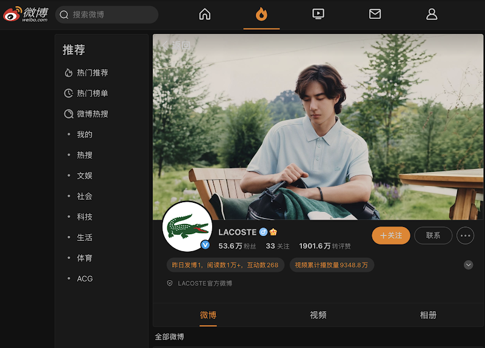
19 Mpartages, commentaires et likes cumulés
Source : Weibo, compte officiel LACOSTE, (consulté le 11/09/2026).
8 / 14
Chiffres lus sur le profil : 53,6 万 abonnés (536 000), 1 901,6 万 partages, commentaires et likes cumulés (19 M), 9 348,8 万 vues vidéo (93 M). La veille : 1 publication, plus de 10 000 lectures, 268 interactions. Post Wang Yibo de mai 2026 : 9 947 likes et 4 516 commentaires, 31 160 interactions au total. Hashtags : #CROCFIT, #Lacoste生动在场. Audience : consommateurs chinois, fans de Wang Yibo, communautés pop culture. Réseau non couvert par Influence4You et Kolsquare : recherche manuelle.
KakaoTalk
le canal officiel de Lacoste en Corée
403 Kamis abonnés au canal
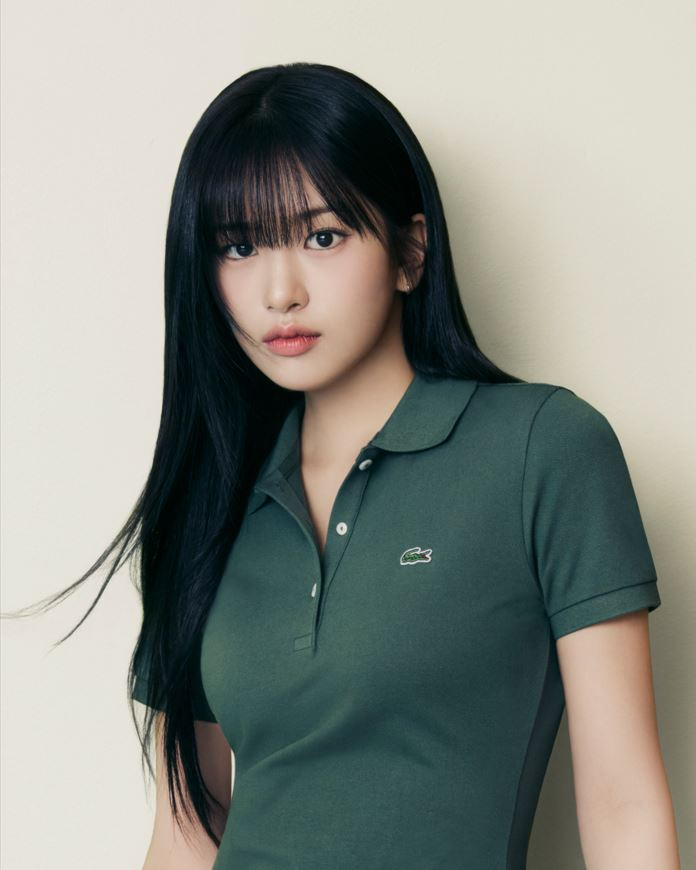
ActualitésNouvelles collections, messages
↗
Offres & couponsEn ligne comme en boutique
↗
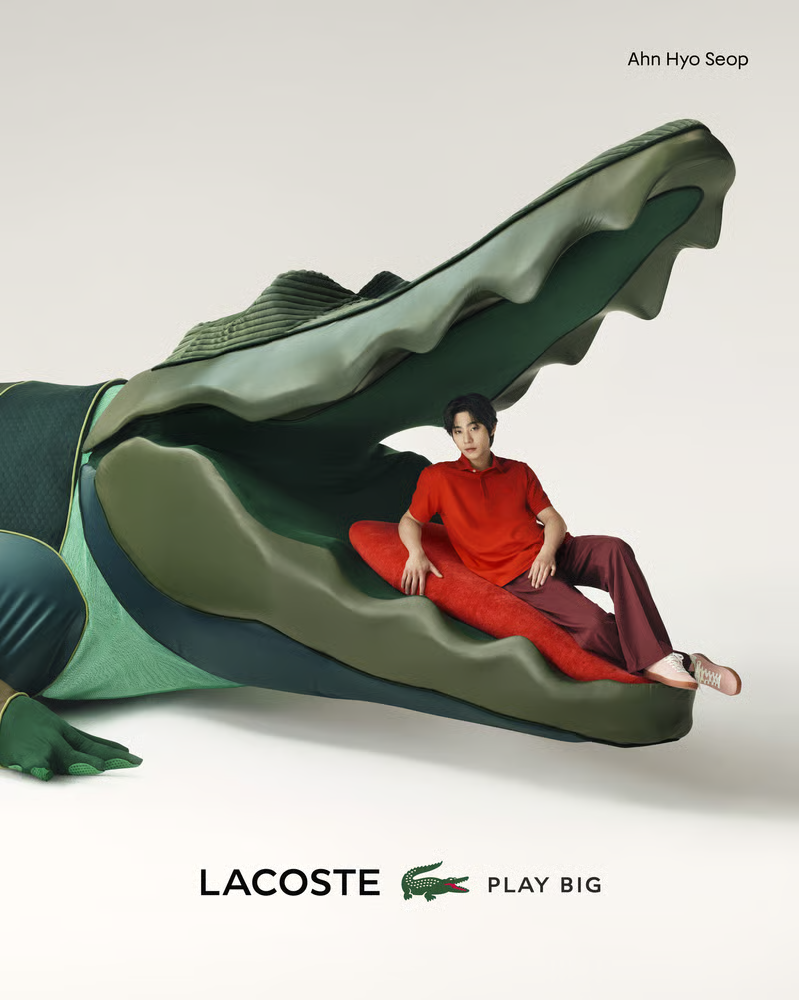
CommerceÉvénements, service client
↗
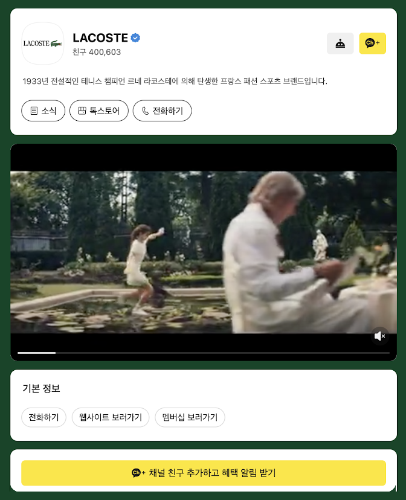
Source : KakaoTalk Channel, canal officiel Lacoste, (consulté le 11/09/2026).
9 / 14
Lacoste adapte son écosystème aux usages locaux : Weibo et Douyin en Chine, KakaoTalk en Corée, WeChat pour le CRM chinois. Visuels : Ahn Yujin, la collection Olympic Heritage et Ahn Hyo Seop dans la campagne « Play Big ». Réseau non couvert par les deux extensions : recherche manuelle.
Threads
@lacoste, « Elevating fashion and sport since 1933 ». Un compte actif, alors qu'on le croyait marginal.
Présence active ↗
1,4 Mfollowers
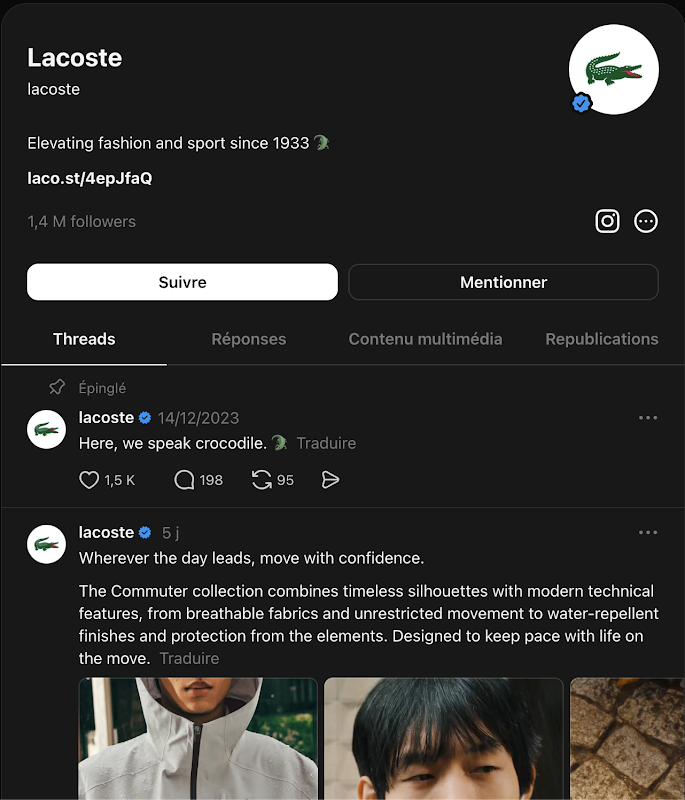
1,5 Klikes sur « Here, we speak crocodile »
84 % des interactions du post
↗
198commentaires
11 % des interactions
↗
95republications
5 % des interactions
↗
Source : Threads, compte officiel @lacoste, (consulté le 11/09/2026).
10 / 14
Première recherche laissait penser à une présence marginale : en réalité le compte est actif et suivi. Leçon d'audit : vérifier plutôt que supposer. Post épinglé du 14/12/2023 « Here, we speak crocodile » : 1 500 likes, 198 commentaires, 95 republications, soit 1 793 interactions, dont 84 % de likes. Rapporté aux 1,4 M de followers : 0,13 % d'engagement.
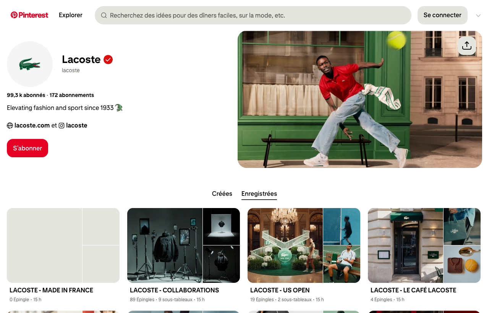
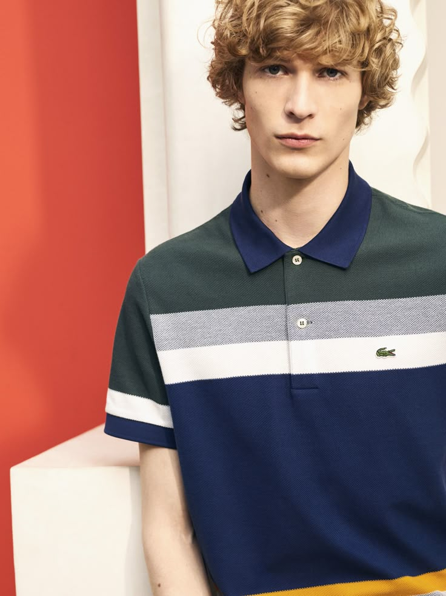
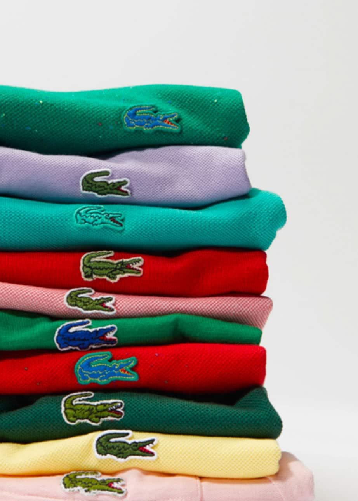
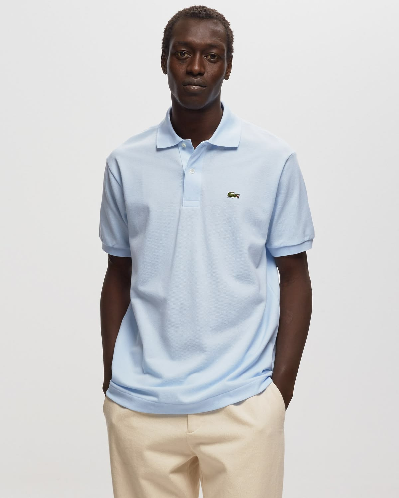
Pinterest, une vitrine sous‑exploitée
Des tableaux par univers (Menswear, Footwear, US Open), mais une audience près de 90 fois plus petite que sur Instagram.
99,3 K abonnés565 épingles Menswear ↗
Sources : Pinterest, profil officiel Lacoste, (consulté le 12/09/2026) ; Instagram, compte @lacoste, (consulté le 11/09/2026).
11 / 14
Profil vérifié le 12/09/2026 : 99,3 k abonnés, 172 abonnements, bio « Elevating fashion and sport since 1933 ». Tableaux : Lacoste Menswear (565 épingles), Footwear (120), Collaborations (89), US Open (19), Le Café Lacoste. 8,9 M d'abonnés sur Instagram contre 99,3 k ici : près de 90 fois moins. Pinterest sert le référencement visuel et l'inspiration mode : une marge de progression pour une marque aussi visuelle. RedNote a été écarté de l'oral : Lacoste n'y a pas de compte officiel, l'absence reste notée comme opportunité dans le bilan.
Bilan
Forces
Identité extrêmement reconnaissable
Stratégie d'ambassadeurs solide
Bonne adaptation culturelle
S
Faiblesses
Engagement ≈ 0,14 à 0,19 % au global
Communication descendante
Positionnement parfois ambigu
W
Opportunités
RedNote : aucun compte officiel, terrain vierge
Pinterest sous-exploité
TikTok : fort potentiel
O
Menaces
Dépendance aux ambassadeurs
Dépendance au marché chinois
X en recul structurel
T
0,14 à 0,19 %engagement global
Taux d'engagement global = (Σ likes + Σ commentaires + Σ partages) ⁄ Σ followers, calculé avec Influence4You et Kolsquare.
12 / 14
0,14-0,19 % au global, contre 1,8-2 % pour des marques comparables plus petites. Message central : la marge de progression n'est plus dans la taille de l'audience mais dans la conversation. Opportunités : RedNote, où Lacoste n'a pas de compte officiel, et Pinterest, 99,3 k abonnés seulement.
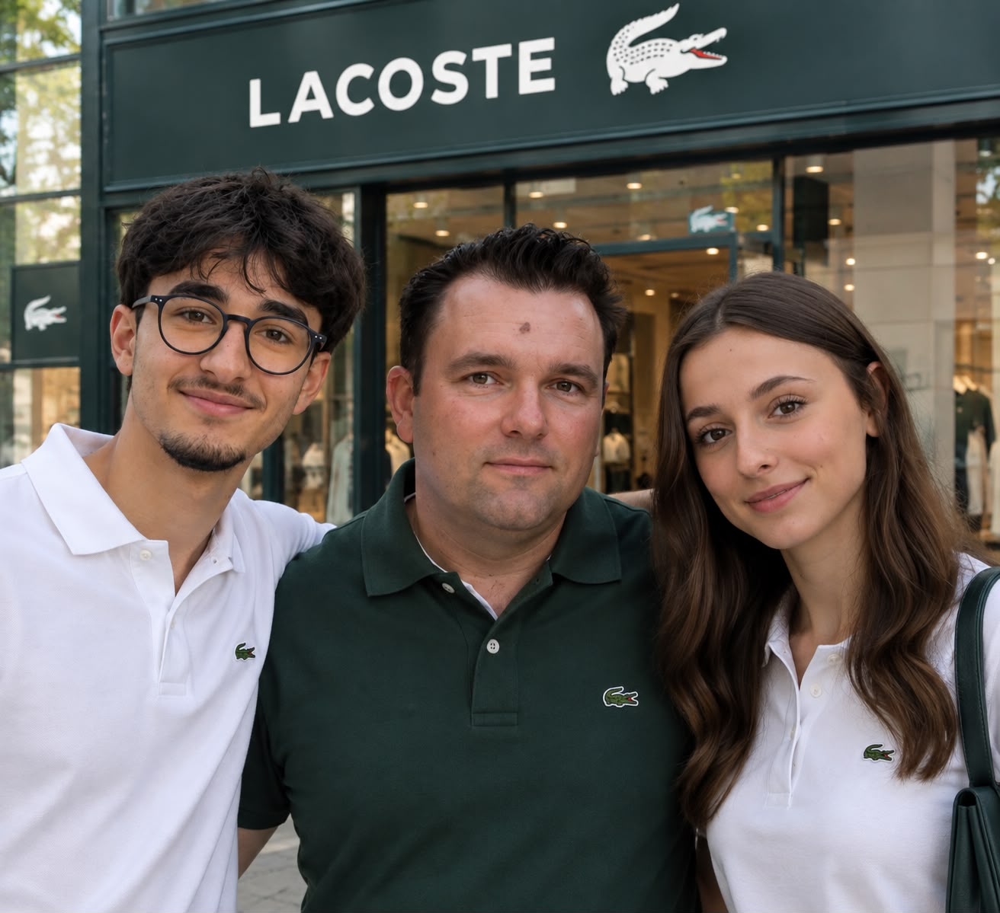
Conclusion
13 / 14
Rien à lire, tout se dit, en trois phrases. « Lacoste a une audience immense, mais un engagement de 0,14 à 0,19 % : la marque parle plus qu'elle ne converse. » « Sa vraie force sociale, ce sont ses ambassadeurs, jusqu'à 30 fois plus engageants que le compte officiel. » « Les leviers sont là : faire dialoguer sa communauté, et investir des réseaux encore sous-exploités comme Pinterest ou RedNote. » S'arrêter là.
Annexe : nos sources et l'usage réel de l'IA
Perez, I. (2026a). Stratégie social media et e-CRM, séance 4(Diapositive 23 : attendus du TD). IUT de Lille. Moodle.
Perez, I. (2026b). Stratégie social media et e-CRM, séances 1 et 2(Diapositive 9 : l'audit). IUT de Lille. Moodle.
Perez, I. (2026c). Stratégie social media et e-CRM, syllabus(p. 22 : outils d'audit). IUT de Lille. Moodle.
Autorité de la concurrence. (s. d.). Décisions relatives au groupe Maus Frères. autoritedelaconcurrence.fr
Influence4You. (s. d.). Extension d'audit d'influenceurs(Extension Chrome). influence4you.com
Influence4You. (2026, 11 septembre). Rapport EMV de la campagne Lacoste(Courriel).
Kolsquare. (s. d.). Extension d'analyse d'influenceurs(Extension Chrome). kolsquare.com
LACOSTE. (s. d.). Canal officiel(KakaoTalk). 11/09/2026. pf.kakao.com/_QvxaEC
LACOSTE. (s. d.). Compte officiel(Weibo). 11/09/2026. weibo.com
Lacoste. (s. d.). Histoire, raison d'être et valeurs. 11/09/2026. lacoste.com
Lacoste. (s. d.). Profil Pinterest. 12/09/2026. pinterest.fr/lacoste
Lacoste [@lacoste]. (s. d.). Profil Threads. 11/09/2026. threads.net/@lacoste
Lacoste [@lacoste]. (2026, 29 juin). Crafted for an icon(Publication). Instagram. instagram.com/lacoste
Lacoste. (2026, 29 juin). Pierre Niney & Pierre Gasly for Lacoste & Alpine(Vidéo). YouTube. youtu.be/jIw0LAhy1Bg
Wikipédia. (s. d.). Lacoste. 11/09/2026. fr.wikipedia.org/wiki/Lacoste_(entreprise)
Qui a fait quoi
Claude
Recherches en ligne
Recoupement des chiffres
Construction des slides
Retouche des visuels
Romane & Sofian
Captures des profils sur les réseaux
Calcul de l'EMV
Choix des quatre réseaux de l'oral
Outils d'analyse
KolsquareInfluence4You
Romane Da-Silva & Sofian Chtioui · BUT3 MDEE · IUT de Roubaix · 18 septembre 2026
14 / 14
Annexe à montrer si le prof pose une question sur les sources ou sur l'usage de l'IA. Le dossier PDF contient la bibliographie complète des 13 réseaux, avec les sources à revérifier signalées.


 YouTube
YouTube